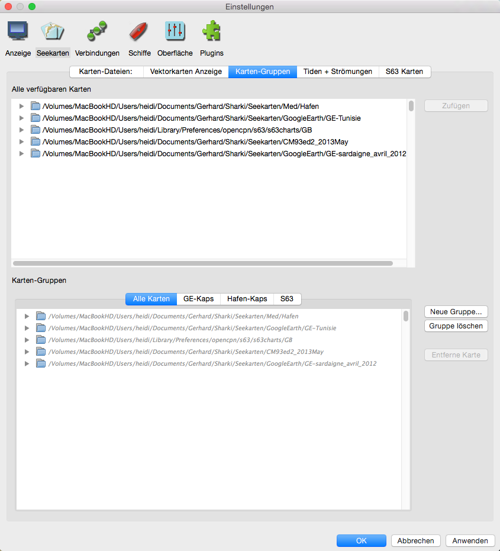
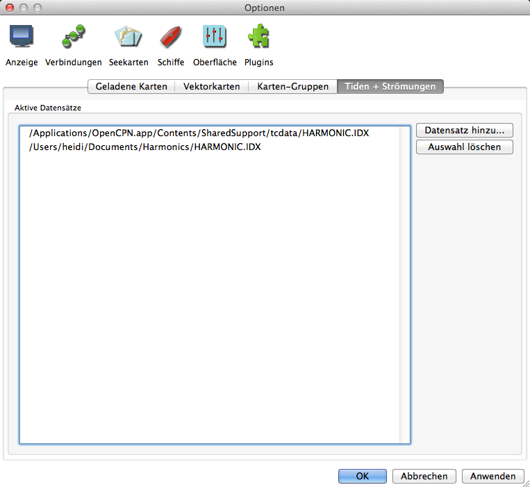
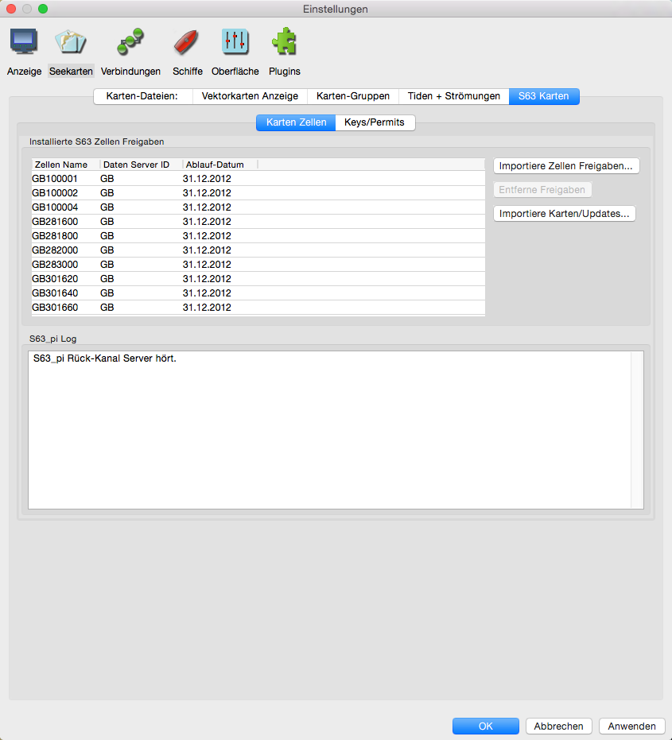
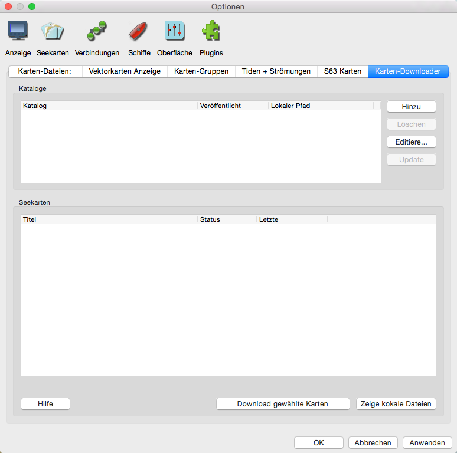
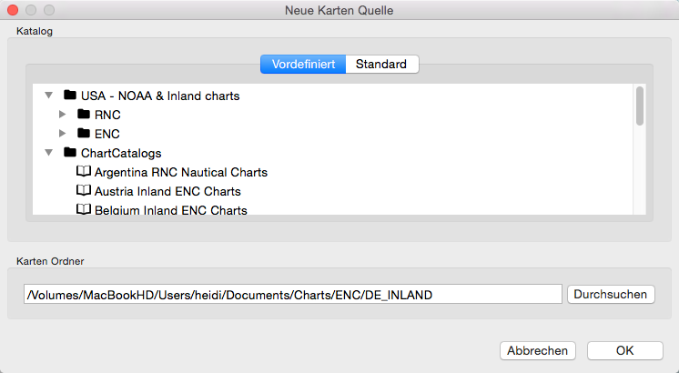
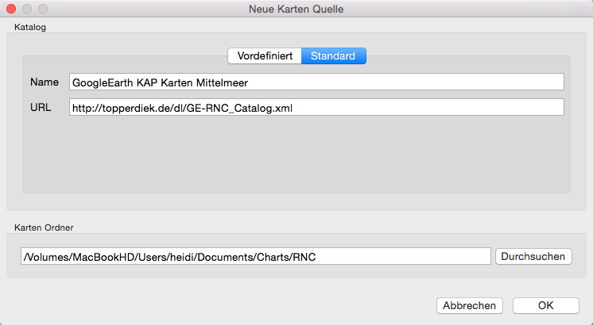
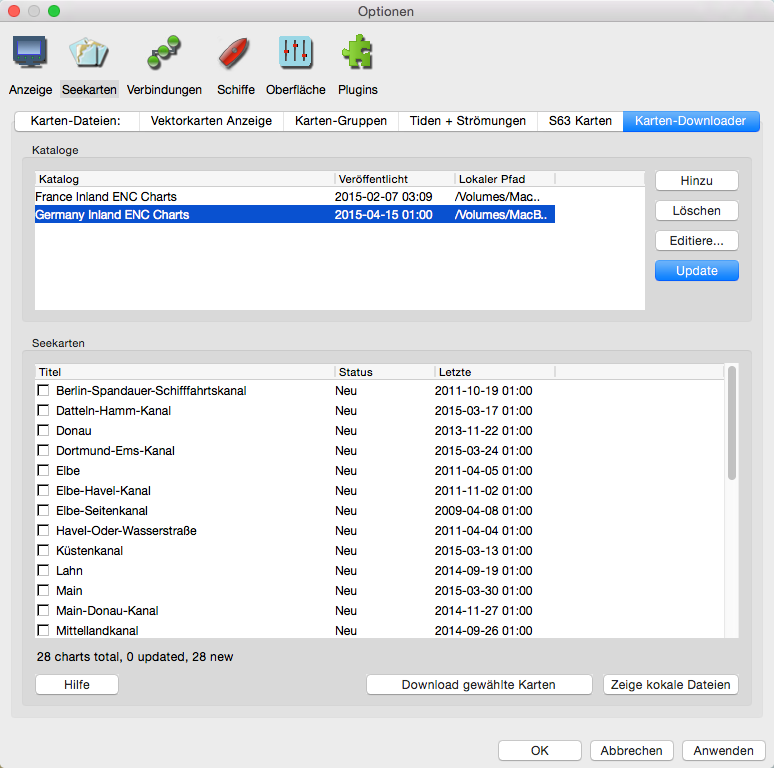
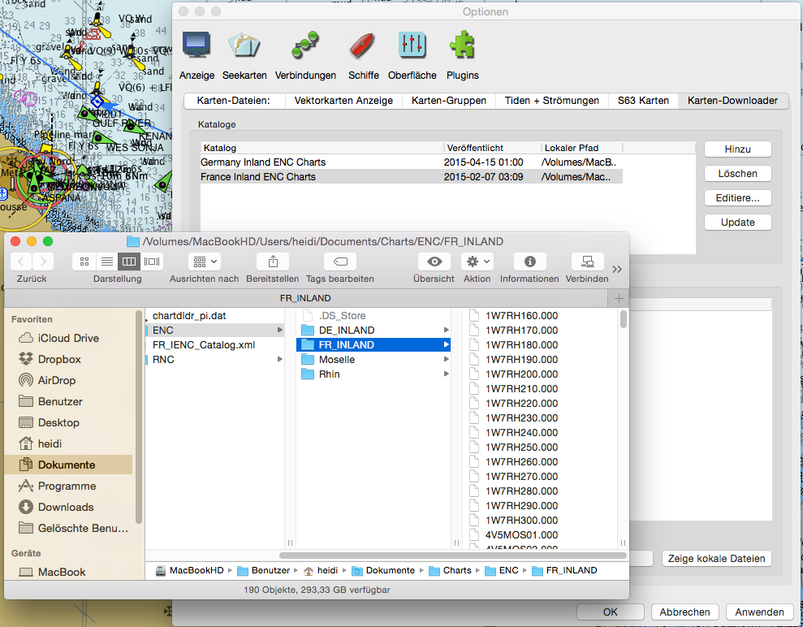
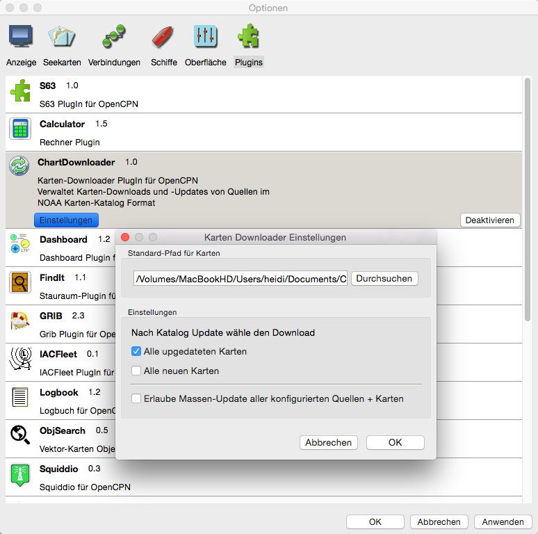

Einstellungen Seekarten
Lasche "Karten-Dateien:"

Das wird im Detail hier behandelt.
Lasche "Vektorkarten Anzeige"

Mehr über Vektorkarten siehe hier.
Lasche "Karten-Gruppen"

Mehr über Karten-Gruppen siehe hier.
Lasche "Tiden + Strömungen"

Aktive Datensätze Die verwendeten Tiden-/Stromdaten. Siehe unter Tiden und Strömungen. Zu dem mitgeliefertem Datensatz können mit dem Button "Datensatz hinzu..." weitere eigene Datensätze hinzugefügt werden. Es öffnet sich ein Datei-Fenster zur Auswahl der Datei.
Mehr über Tiden und Strömungen siehe hier.
Lasche "S63 Karten"
Diese Lasche erscheint nur, wenn das S63 Plugin aktiviert ist. Informationen zu S63 auf der o-charts.org Homepage.

Karten-Download Plugin
Dieses Plugin hilft beim Download und der Verwaltung von freien Karten aus dem Internet. Es kann die Karten auf dem neuesten Stand halten. Die Aktivierung dieses Plugins erzeugt kein neues Symbol auf der Werkzeugleiste sondern nur eine neue Lasche in den Einstellungen unter Seekarten.
Karten-Kataloge
Der Karten-Downloader basiert auf Katalogen von Karten. Ein Katalog ist eine XML Datei mit den Namen der Karten zusammen mit dem Update-Datum/Zeit und der Internet-Adresse
der aktuellen Karten-Daten. Vor dem Download irgendeiner Karte muß zunächst ein oder mehrere Karten-Kataloge konfiguriert und heruntergeladen werden.
Die Kataloge kommen entweder von den Agenturen (NOAA und Army Corps of Engineers in den USA) oder von dem Karten-Katalog-Projekt des Autors.
Wird ein Katalog geladen, scannt der Karten-Downloader automatisch die existierenden Karten auf Ihrem Computer auf der Suche nach Updates oder neuen Karten in dem Katalog.
Nach der Aktivierung dieses Plugins kann die neue Lasche Karten-Downloader über die Einstellungen (Optionen/Seekarten) geöffnet werden und ist zunächst leer.

Verwendung
Das Fenster hat 2 Bereiche. Der obere Bereich ist für die Karten-Kataloge. Einige Karten-Quellen besitzen mehrere verschiedene Kataloge für den gleichen Karten-Satz. So stellt z.B. die NOAA Karten-Kataloge für jeden Staat, Region oder Coast-Guard Bereich zur Verfügung als auch einen großen kompletten Satz. Dann gibt es separate Kataloge für Raster-Karten (RNC) und Vektor-Karten (ENC) der NOAA. Im ersten Schritt wird der gewünschte Katalog gewählt. Dabei sollte man bedenken, daß man nicht immer alle Karten haben muß, sondern es oft sinnvoller ist, mehrere kleine Kataloge zu haben. Mit der Hinzu Schaltfläche öffnet sich das Karten-Katalog Fenster zur Auswahl eines Katalogs:

Es gibt vordefinierte Kataloge für alle z.Zt. bekannten frei downloadbaren Karten auf der Welt (siehe Bild oben). Mit Lasche Standard kann man hingegen eigene Kataloge erstellen,
wenn man dafür eine eigene XML Katalog-Datei macht und diese auf einen Server hochlädt.
Die vordefinierten Kataloge umfassen USA mit den Untergruppen für Raster- und Vektor-Karten sowie die anderen Länder in einer Ordner-Struktur. Nach der Auswahl eines Kataloges
wird das Feld Karten Ordner darunter automatisch ausgefüllt. Das ist der Platz, an dem die heruntergeladenen Dateien auf Ihrem Computer gespeichert werden. Ist das in Ordnung,
klicken Sie OK, ansonsten können Sie mit der Schaltfläche Durchsuchen den Platz ändern. Merken Sie sich diesen Ort, da er später zum Bekanntmachen der Karten in OpenCPN wieder
angegeben werden muß. Dies ist hier oben auf dieser Seite erklärt (Lasche Karten-Dateien:).

In diesem Beispiel für einen eigenen Katalog erstellt man zunächst nach den Mustern eine eigene XML Datei, lädt diese auf seinen Server hoch und trägt die Daten wie oben ein. Hier wurden also die georeferenzierten GoogleEarth Dateien entsprechend verfügbar gemacht.

Ist ein Katalog gewählt, kann in der Spalte Veröffentlicht anstelle des Datums (Bitte erst Update) erscheinen. Erst mit Klick auf die Update Schaltfläche wird dann der aktuelle Katalog geladen und die Bezeichnungen der Karten erscheinen in der unteren Liste. Dort können nun die zum Herunterladen gewünschten Karten mit einem Haken versehen werden oder mit dem Rechtsklick-Menü in die Liste eine schnellere Auswahl getroffen werden. Je nach dem um wie viele Karten es sich handelt, kann der Download einige Zeit dauern.

Mit der Schaltfläche Zeige lokale Dateien öffnet sich ein Finder-Fenster mit dem entsprechenden Ordner. Das Grundverzeichnis zum Download läßt sich in den Einstellungen des Plugins festlegen.

Weiterhin kann dort festgelegt werden, was nach dem Erneuern eines Katalogs gemacht werden soll und ob Massen-Downloads erfolgen sollen. In dem Fall gibt es eine neue Schaltfläche und die Voreinstellungen werden entsprechend der Auswahl gemacht.